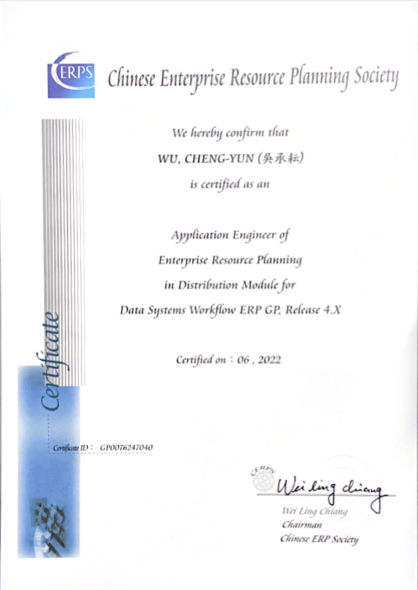

Experiences
Research Projects
[1] Digital Support, Unimpeded Communication: The Development, Support and Promotion of AI-assisted Communication Assistive Devices for Speech Impairment: Sub-project 3: Multimodal Cross-lingual Task-Oriented Dialogue System for Inclusive Communication Support
National Science and Technology Council (NSTC 113-2425-H-305-003-), 2023/05/01 - 2026/04/30
- Research Assistant, 2024/09 - Now
Papers
Master Thesis
- Multimodal Dialogue System for Chinese Taipei University Sport Federation, Advisor: Min-Yuh Day, Yen-Chun Lin
Certificates

2021/6/9
98-381:MTA:Introduction to Programming using Python

2021/6/10
98-364:MTA:Database Fundamentals

2022/06
Application Engineer of Enterprise Resource Planning in Distribution Module for Data Systems Workflow ERP GP, Release 4.X

2024/10/12
NVIDIA_Building RAG Agents with LLMs_Certificate
Competitions 📸 View Photos
- 2025 The 10th TSC Marketing Symposium: AI Application Marketing Competition, Honorable Mention, 2025/05/24
- 2025 The 3rd NTPU AI Smart Application Innovation Competition: Practical Division, Excellence Award, 2025/05/22
- 2025 Best AI Awards, Final contest, 2025/05/03
Conferences 📸 View Photos
- 2025 International Conference on Information Management, New Taipei, Taiwan, 2025/05/16
- NTCIR-18 (The 18th NII Testbeds and Community for Information access Research) Conference, Tokyo, Japan, 2025/06/10-13 More >
- TWSC2 2025 (2025 Taiwan Symposium On Cloud And Services Computing), New Taipei, Taiwan, 2025/07/03-04
Other Experiences 📸 View Photos
- A teaching assistant for programming courses, 2020/09 - 2022/06
- Technology Inclusion Projects Achievement Presentation, 2024/10/30
- FinTech Taipei 2024, 2024/11/01 - 2024/11/02 News
- Participated in an academic exchange visit to Japan, 2024/11/04 - 2024/11/08